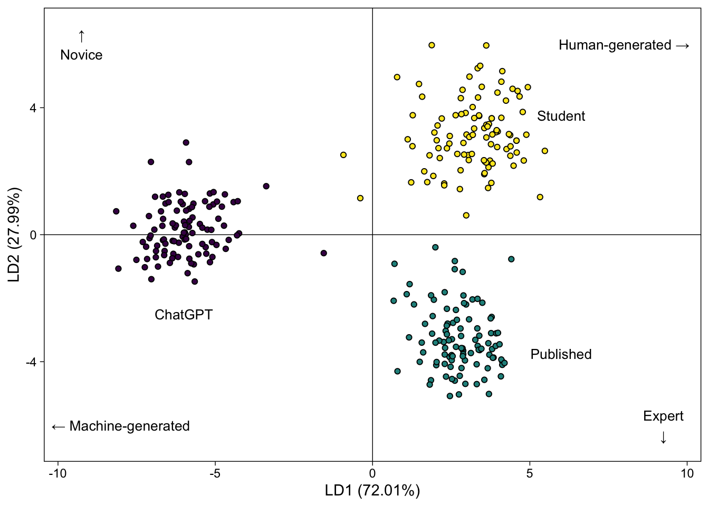

library(tidyverse)
library(gt)Student Writing and Expertise in the Age of AI
1 Background & data
This notebook includes the code and data that were used to produce the results of our study, which was submitted to the Journal of Statistics and Data Science Education.
Note that the complete raw text data is not being made available to protect the privacy of the student writers. However, samples from the published and ChatGPT-generated data are included in order to demonstrate the processing pipeline.
1.1 Load packages
1.2 Load data
load("data/chatgpt_data.rda")1.3 Create a composition table
corpus_comp <- stats_freq %>%
pivot_longer(cols = AF_chatgpt:AF_student, names_to = "Author_Type", values_to = "AF") %>%
group_by(Author_Type) %>%
summarize(Texts = 100,
Tokens = sum(AF)) %>%
mutate(Author_Type = c("ChatGPT", "Published", "Student"))Say stuff…
| Author Type | Texts | Tokens | |
|---|---|---|---|
| ChatGPT | 100 | 9,625 | |
| Published | 100 | 62,961 | |
| Student | 100 | 13,676 | |
| Total | — | 300 | 86,262 |
2 Linear discriminant analysis (LDA)
Say stuff….
# Scale variables
biber_scaled <- stats_biber %>%
select(-doc_id) %>%
mutate_if(is.numeric, scale)
stats_lda <- MASS::lda(Group ~ ., biber_scaled)Function for plotting…
lda_scatter <- function(lda){
var_ex <- (lda$svd)^2/sum(lda$svd^2) * 100
per_ex_1 <- paste0("(", round(var_ex[1], 2), "%)")
per_ex_2 <- paste0("(", round(var_ex[2], 2), "%)")
scores <- predict(lda) %>%
data.frame() %>%
select(class, x.LD1, x.LD2)
max_x <- scores[,2] %>% abs() %>% max() %>% ceiling()+.5
max_y <- scores[,3] %>% abs() %>% max() %>% ceiling()+.5
p1 <- ggplot() +
geom_hline(yintercept = 0, linewidth = .25) +
geom_vline(xintercept = 0, linewidth = .25) +
geom_point(data = scores, aes(x = x.LD1, y = x.LD2, fill = class),
shape = 21, size = 1.5) +
viridis::scale_fill_viridis(discrete = T) +
xlab(paste0("LD1", " ", per_ex_1)) +
ylab(paste0("LD2", " ", per_ex_2)) +
ylim(-max_y, max_y) +
xlim(-max_x, max_x) +
theme_linedraw() +
theme(panel.grid.minor.x = element_blank()) +
theme(panel.grid.minor.y = element_blank()) +
theme(panel.grid.major.x = element_blank()) +
theme(panel.grid.major.y = element_blank()) +
theme(legend.position = "none")
return(p1)
}

3 Multiple univariate regression
Say stuff…
z_means <- stats_biber %>%
select(-doc_id) %>%
mutate_if(is.numeric, scale) %>%
pivot_longer(!Group, names_to = "variable", values_to = "z_score") %>%
group_by(Group, variable) %>%
summarize(mean_z = mean(z_score)) %>%
pivot_wider(names_from = Group, values_from = mean_z)
lm_biber <- stats_biber %>%
select(-doc_id) %>%
pivot_longer(!Group, names_to = "variable", values_to = "value") %>%
group_by(variable) %>%
arrange(.by_group = TRUE) %>%
nest() %>%
mutate(models = map(data, ~ lm(value ~ Group, data = .)),
glance = map(models, broom::glance)) %>%
unnest(glance) %>%
select(-c(data, models)) %>%
left_join(z_means) %>%
select(variable, ChatGPT:Student, everything())ld1_tbl <- lm_biber %>%
select(ChatGPT:r.squared, p.value) %>%
mutate(direction = ifelse(ChatGPT > 0 & Published < 0 & Student <0, "machine", NA)) %>%
mutate(direction = ifelse(ChatGPT < 0 & Published > 0 & Student > 0, "human", direction)) %>%
filter(!is.na(direction)) %>%
filter(r.squared > 0.1) %>%
arrange(direction, -r.squared)
ld2_tbl <- lm_biber %>%
select(ChatGPT:r.squared, p.value) %>%
mutate(direction = ifelse(Published > 0 & ChatGPT < 0 & Student <0, "expert", NA)) %>%
mutate(direction = ifelse(Student > 0 & ChatGPT < 0 & Published < 0, "novice", direction)) %>%
filter(!is.na(direction)) %>%
filter(r.squared > 0.1) %>%
arrange(desc(direction), -r.squared)| ChatGPT n:100 |
Published n:100 |
Student n:100 |
R2 | p-value | |
|---|---|---|---|---|---|
| Features indicating human-generated writing | |||||
| adverbs | −0.97 | 0.23 | 0.74 | 0.52 | 0.00 |
| conjuncts | −0.75 | 0.62 | 0.13 | 0.32 | 0.00 |
| modal possibility | −0.71 | 0.04 | 0.66 | 0.32 | 0.00 |
| pronoun it | −0.56 | 0.04 | 0.53 | 0.20 | 0.00 |
| verb private | −0.56 | 0.04 | 0.51 | 0.19 | 0.00 |
| split auxiliary | −0.56 | 0.37 | 0.19 | 0.16 | 0.00 |
| that verb comp | −0.48 | 0.48 | 0.00 | 0.15 | 0.00 |
| prepositions | −0.46 | 0.34 | 0.12 | 0.11 | 0.00 |
| verb suasive | −0.45 | 0.12 | 0.34 | 0.11 | 0.00 |
| verb public | −0.47 | 0.23 | 0.24 | 0.11 | 0.00 |
| Features indicating machine-generated writing | |||||
| mean word length | 1.14 | −0.13 | −1.01 | 0.78 | 0.00 |
| modal predictive | 1.22 | −0.72 | −0.51 | 0.76 | 0.00 |
| gerunds | 1.11 | −0.56 | −0.55 | 0.62 | 0.00 |
| other adv sub | 0.94 | −0.70 | −0.24 | 0.47 | 0.00 |
| demonstratives | 0.88 | −0.70 | −0.19 | 0.43 | 0.00 |
| nominalizations | 0.71 | 0.00 | −0.71 | 0.34 | 0.00 |
| phrasal coordination | 0.65 | −0.20 | −0.45 | 0.22 | 0.00 |
| ChatGPT n:100 |
Published n:100 |
Student n:100 |
R2 | p-value | |
|---|---|---|---|---|---|
| Features indicating novice writing | |||||
| be main verb | −0.76 | −0.17 | 0.93 | 0.49 | 0.00 |
| present tense | −0.58 | −0.23 | 0.81 | 0.35 | 0.00 |
| emphatics | −0.51 | −0.27 | 0.77 | 0.31 | 0.00 |
| third person pronouns | −0.43 | −0.28 | 0.71 | 0.26 | 0.00 |
| clausal coordination | −0.48 | −0.11 | 0.59 | 0.20 | 0.00 |
| wh clause | −0.32 | −0.21 | 0.53 | 0.14 | 0.00 |
| if | −0.31 | −0.12 | 0.43 | 0.10 | 0.00 |
| Features indicating expert writing | |||||
| agentless passives | −0.56 | 0.78 | −0.22 | 0.32 | 0.00 |
| past tense | −0.55 | 0.68 | −0.13 | 0.26 | 0.00 |
| time adverbials | −0.42 | 0.47 | −0.05 | 0.13 | 0.00 |
4 Modal verb frequencies
Say stuff…
| Modal verb | Absolute Frequency | Relative Frequency (per 105 words) | ||||
|---|---|---|---|---|---|---|
| ChatGPT | Published | Student | ChatGPT | Published | Student | |
| Prediction | ||||||
| will | 199 | 96 | 39 | 206.75 | 15.25 | 28.52 |
| would | 0 | 28 | 10 | 0.00 | 4.45 | 7.31 |
| 'll | 0 | 0 | 1 | 0.00 | 0.00 | 0.73 |
| Possiblity | ||||||
| can | 5 | 199 | 68 | 5.19 | 31.61 | 49.72 |
| may | 0 | 91 | 46 | 0.00 | 14.45 | 33.64 |
| could | 0 | 43 | 15 | 0.00 | 6.83 | 10.97 |
| might | 0 | 19 | 6 | 0.00 | 3.02 | 4.39 |
| Necessity | ||||||
| should | 0 | 20 | 10 | 0.00 | 3.18 | 7.31 |
| must | 0 | 16 | 0 | 0.00 | 2.54 | 0.00 |
5 Noun phrases
Say stuff…
count_pre <- function(np, root){
np_vector <- stringi::stri_extract_all_words(np) %>% unlist()
n_pre <- match(root, np_vector) - 1
n_pre <- unlist(unname(n_pre))
return(n_pre)
}
count_post <- function(np, root){
np_vector <- stringi::stri_extract_all_words(np) %>% unlist()
n_post <- length(np_vector) - match(root, np_vector)
n_post <- unlist(unname(n_post))
return(n_post)
}pre_counts <- stats_nps %>%
group_by(author_type, pre_nom) %>%
summarize(count = n()) %>%
ungroup() %>%
group_by(author_type) %>%
mutate(proportion = count/sum(count) * 100) %>%
arrange(-proportion)
post_counts <- stats_nps %>%
group_by(author_type, post_nom) %>%
summarize(count = n()) %>%
ungroup() %>%
group_by(author_type) %>%
mutate(proportion = count/sum(count) * 100) %>%
arrange(-proportion)We actually don’t have these in the study, but they’re interesting?
| Pre-nominal POS | Absolute Frequency | Relative Frequency (per 102 words) | ||||
|---|---|---|---|---|---|---|
| ChatGPT | Published | Student | ChatGPT | Published | Student | |
| NA | 431 | 2043 | 654 | 29.95 | 27.85 | 31.96 |
| NN | 441 | 1038 | 188 | 30.65 | 14.15 | 9.19 |
| JJ | 190 | 1943 | 368 | 13.20 | 26.49 | 17.99 |
| DT | 268 | 1412 | 517 | 18.62 | 19.25 | 25.27 |
| PRP$ | 4 | 102 | 92 | 0.28 | 1.39 | 4.50 |
| NNP | 4 | 285 | 49 | 0.28 | 3.88 | 2.39 |
| JJR | 49 | 50 | 37 | 3.41 | 0.68 | 1.81 |
| VBN | 12 | 126 | 20 | 0.83 | 1.72 | 0.98 |
| CD | 0 | 87 | 30 | 0.00 | 1.19 | 1.47 |
| VBG | 14 | 83 | 20 | 0.97 | 1.13 | 0.98 |
| NNS | 12 | 23 | 12 | 0.83 | 0.31 | 0.59 |
| POS | 0 | 9 | 17 | 0.00 | 0.12 | 0.83 |
| HYPH | 11 | 57 | 0 | 0.76 | 0.78 | 0.00 |
| JJS | 0 | 28 | 14 | 0.00 | 0.38 | 0.68 |
| WP | 0 | 1 | 10 | 0.00 | 0.01 | 0.49 |
| WDT | 0 | 8 | 9 | 0.00 | 0.11 | 0.44 |
| RB | 0 | 12 | 4 | 0.00 | 0.16 | 0.20 |
| SYM | 0 | 13 | 1 | 0.00 | 0.18 | 0.05 |
| IN | 1 | 5 | 2 | 0.07 | 0.07 | 0.10 |
| CC | 1 | 2 | 0 | 0.07 | 0.03 | 0.00 |
| VB | 1 | 0 | 1 | 0.07 | 0.00 | 0.05 |
| NNPS | 0 | 2 | 1 | 0.00 | 0.03 | 0.05 |
| VBD | 0 | 3 | 0 | 0.00 | 0.04 | 0.00 |
| FW | 0 | 1 | 0 | 0.00 | 0.01 | 0.00 |
| RP | 0 | 1 | 0 | 0.00 | 0.01 | 0.00 |
| VBZ | 0 | 1 | 0 | 0.00 | 0.01 | 0.00 |
| WP$ | 0 | 1 | 0 | 0.00 | 0.01 | 0.00 |
| Post-nominal POS | Absolute Frequency | Relative Frequency (per 102 words) | ||||
|---|---|---|---|---|---|---|
| ChatGPT | Published | Student | ChatGPT | Published | Student | |
| NA | 716 | 3837 | 1177 | 49.76 | 52.30 | 57.53 |
| IN | 513 | 2284 | 604 | 35.65 | 31.13 | 29.52 |
| CC | 69 | 305 | 79 | 4.79 | 4.16 | 3.86 |
| WP | 38 | 8 | 14 | 2.64 | 0.11 | 0.68 |
| NN | 37 | 45 | 9 | 2.57 | 0.61 | 0.44 |
| WDT | 16 | 147 | 38 | 1.11 | 2.00 | 1.86 |
| VBN | 2 | 140 | 16 | 0.14 | 1.91 | 0.78 |
| VBG | 10 | 112 | 14 | 0.69 | 1.53 | 0.68 |
| JJ | 21 | 74 | 19 | 1.46 | 1.01 | 0.93 |
| TO | 3 | 92 | 27 | 0.21 | 1.25 | 1.32 |
| NNP | 1 | 55 | 7 | 0.07 | 0.75 | 0.34 |
| RB | 3 | 50 | 8 | 0.21 | 0.68 | 0.39 |
| NNS | 9 | 4 | 5 | 0.63 | 0.05 | 0.24 |
| CD | 0 | 44 | 2 | 0.00 | 0.60 | 0.10 |
| WRB | 1 | 31 | 8 | 0.07 | 0.42 | 0.39 |
| DT | 0 | 29 | 6 | 0.00 | 0.40 | 0.29 |
| VBZ | 0 | 26 | 2 | 0.00 | 0.35 | 0.10 |
| PRP | 0 | 8 | 7 | 0.00 | 0.11 | 0.34 |
| VBP | 0 | 16 | 0 | 0.00 | 0.22 | 0.00 |
| VBD | 0 | 11 | 0 | 0.00 | 0.15 | 0.00 |
| PRP$ | 0 | 0 | 2 | 0.00 | 0.00 | 0.10 |
| RBR | 0 | 0 | 1 | 0.00 | 0.00 | 0.05 |
| RP | 0 | 0 | 1 | 0.00 | 0.00 | 0.05 |
| MD | 0 | 3 | 0 | 0.00 | 0.04 | 0.00 |
| POS | 0 | 3 | 0 | 0.00 | 0.04 | 0.00 |
| SYM | 0 | 3 | 0 | 0.00 | 0.04 | 0.00 |
| XX | 0 | 3 | 0 | 0.00 | 0.04 | 0.00 |
| FW | 0 | 1 | 0 | 0.00 | 0.01 | 0.00 |
| JJR | 0 | 1 | 0 | 0.00 | 0.01 | 0.00 |
| JJS | 0 | 1 | 0 | 0.00 | 0.01 | 0.00 |
| RBS | 0 | 1 | 0 | 0.00 | 0.01 | 0.00 |
| VGG | 0 | 1 | 0 | 0.00 | 0.01 | 0.00 |
| WP$ | 0 | 1 | 0 | 0.00 | 0.01 | 0.00 |
df_plot <- stats_nps %>%
filter(!is.na(n_pre) | !is.na(n_post)) %>%
group_by(author_type) %>%
summarize(np_len = mean(np_len),
pre_root = mean(n_pre),
post_root = mean(n_post)) %>%
mutate(author_type = c("ChatGPT", "Published", "Student"))
df_plot <- within(df_plot, author_type <- factor(author_type, levels = c('Student', 'ChatGPT', 'Published')))5.1 Build plot
text_center <- grid::textGrob("Root noun", gp= grid::gpar(fontsize=10, fontface="bold"))
text_left <- grid::textGrob("Pre-nominal", gp= grid::gpar(fontsize=10, fontface="bold"))
text_right <- grid::textGrob("Post-nominal", gp= grid::gpar(fontsize=10, fontface="bold"))
g.mid <- ggplot(df_plot, aes(x=1, y=author_type)) +
geom_text(aes(label = paste0("- ", author_type, " -")), lineheight = 1) +
ggtitle("") +
ylab(NULL) +
annotation_custom(text_center, xmin=1, xmax=1, ymin=-0.5, ymax=1.5) +
coord_cartesian(clip = "off") +
theme(axis.title=element_blank(),
panel.grid=element_blank(),
axis.text.y=element_blank(),
axis.ticks.y=element_blank(),
panel.background=element_blank(),
axis.text.x=element_text(color=NA),
axis.ticks.x=element_line(color=NA),
plot.margin = unit(c(1, -1, 1.25, -1), "lines"))
g1 <- ggplot(data = df_plot, aes(x = author_type, y = pre_root, fill = author_type)) +
geom_col(width = 0.5) + ggtitle("") +
scale_fill_manual(values = c(
"Published" = viridis::viridis(3)[2],
"ChatGPT" = viridis::viridis(3)[1],
"Student" = viridis::viridis(3)[3])
) +
geom_text(
aes(y = .55, label = paste0("← ", round(pre_root, 2), " words")),
nudge_x = .5
) +
theme(axis.title.x = element_blank(),
axis.title.y = element_blank(),
axis.text.y = element_blank(),
axis.ticks.y = element_blank(),
axis.text.x = element_blank(),
legend.position = "none",
axis.ticks.x = element_blank(),
panel.background = element_blank(),
plot.margin = unit(c(1, -1, 2, 0), "lines")) +
annotation_custom(text_left, xmin=-0.5, xmax=1.5, ymin=-0.5, ymax=-0.5) +
scale_y_reverse() +
coord_flip()
g2 <- ggplot(data = df_plot, aes(x = author_type, y = post_root, fill = author_type)) +
xlab(NULL) +
geom_col(width = 0.5) + ggtitle("") +
scale_fill_manual(values = c(
"Published" = viridis::viridis(3)[2],
"ChatGPT" = viridis::viridis(3)[1],
"Student" = viridis::viridis(3)[3])
) +
geom_text(
aes(y = .5, label = paste0(round(post_root, 2), " words →")),
nudge_x = .5
) +
theme(axis.title.x = element_blank(),
axis.title.y = element_blank(),
axis.text.y = element_blank(),
axis.ticks.y = element_blank(),
axis.text.x = element_blank(),
axis.ticks.x = element_blank(),
legend.position = "none",
panel.background = element_blank(),
plot.margin = unit(c(1, 0, 2, -1), "lines")) +
annotation_custom(text_right, xmin=-0.5, xmax=1.5, ymin=0.5, ymax=0.5) +
coord_flip()
gg1 <- ggplot_gtable(ggplot_build(g1))
gg2 <- ggplot_gtable(ggplot_build(g2))
gg.mid <- ggplot_gtable(ggplot_build(g.mid))5.2 Plot